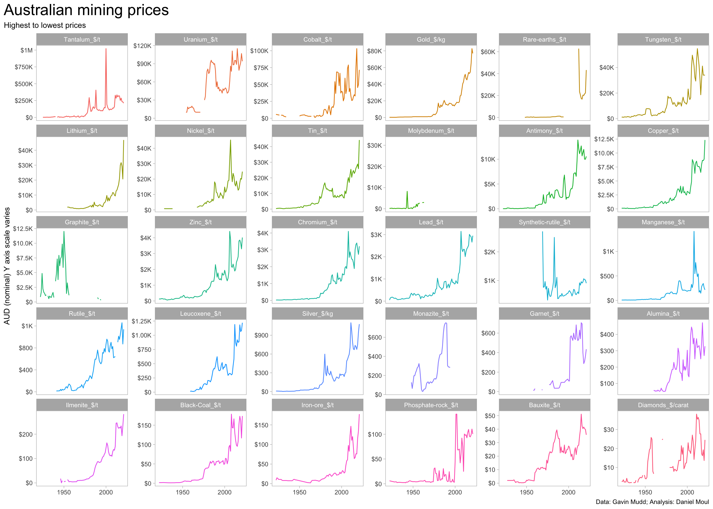
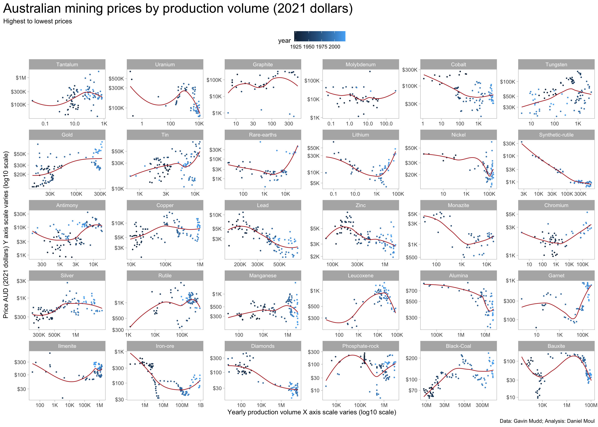

There is great variation in commodity prices over time and among the commodities. These dynamics are the focus of this chapter.
3 Prices by commodity: nominal and constant 2021 dollars
Since 2000, very high nominal price rises occurred for many commodities.
Show the code
product_levels <-dta_yearly_long |>
filter(!is.na(price)) |>
slice_max(order_by = price, n = 1,
by = product_price) |>
arrange(desc(price)) |>
pull(product_price)
dta_yearly_long |>
mutate(product_price = factor(product_price, levels = product_levels)) |>
ggplot(aes(year, price, color = product_price)) +
geom_line(na.rm = TRUE, show.legend = FALSE) +
scale_x_continuous(breaks = c(1850, 1900, 1950, 2000)) +
scale_y_continuous(labels = label_number(scale_cut = cut_short_scale(),
prefix = "$"),
) +
facet_wrap(~ product_price, scales = "free_y") +
labs(
title = glue("Australian mining prices"),
subtitle = "Highest to lowest prices",
x = NULL,
y = "AUD (nominal) Y axis scale varies",
caption = my_caption
)
However, after adjusting for inflation (using constant 2021 dollars) we can see that commodity prices generally are not near their peak, and some prices have been in long-term decline, for example: Tungsten, Alumina, and Bauxite.
For this reason, all plots starting with this one use constant 2021 dollars.
Show the code
product_levels <- dta_yearly_long |>
filter(!is.na(price_2021)) |>
slice_max(order_by = price_2021, n = 1,
by = product_price) |>
arrange(desc(price_2021)) |>
pull(product_price)
dta_yearly_long |>
mutate(product_price = factor(product_price, levels = product_levels)) |>
ggplot(aes(year, price_2021, color = product_price)) +
geom_line(na.rm = TRUE, show.legend = FALSE) +
scale_x_continuous(breaks = c(1850, 1900, 1950, 2000)) +
scale_y_continuous(labels = label_number(scale_cut = cut_short_scale(),
prefix = "$"),
) +
facet_wrap(~ product_price, scales = "free_y") +
labs(
title = glue("Australian mining prices (2021 dollars)"),
subtitle = "Highest to lowest prices",
x = NULL,
y = "AUD (2021 dollars) Y axis scale varies",
caption = my_caption
)3.1 Price by production volume
Does production volume go up when prices go up (mine owners are more motivated to produce more, or it becomes economical to mine previously marginal deposits)? Or do prices go down when volume goes up (perhaps demand is satisfied, leading to lower prices)? The answer is mixed. Gold, Lithium, Chromium, and Iron ore demand and production volume have been positively correlated in recent years. Uranium and Bauxite demand and production volume have been negatively correlated.
Show the code
product_levels <- dta_yearly_long |>
filter(!is.na(price_2021)) |>
slice_max(order_by = price_2021, n = 1,
by = product_name) |>
arrange(desc(price_2021)) |>
pull(product_name)
dta_yearly_long |>
filter(!is.na(price)) |>
mutate(product_name = factor(product_name, levels = product_levels)) |>
ggplot(aes(mass, price_2021, color = year)) +
geom_point(na.rm = TRUE, size = 0.5, show.legend = TRUE) +
geom_smooth(se = FALSE, method = 'loess', formula = 'y ~ x',
na.rm = TRUE, linewidth = 0.5, color = "firebrick") +
scale_x_log10(labels = label_number(scale_cut = cut_short_scale())) +
scale_y_log10(labels = label_number(scale_cut = cut_short_scale(),
prefix = "$")) +
facet_wrap(~ product_name, scales = "free") +
theme(legend.position = "top") +
labs(
title = glue("Australian mining prices by production volume (2021 dollars)"),
subtitle = "Highest to lowest prices",
x = "Yearly production volume X axis scale varies (log10 scale)",
y = "Price AUD (2021 dollars) Y axis scale varies (log10 scale)",
caption = my_caption
)